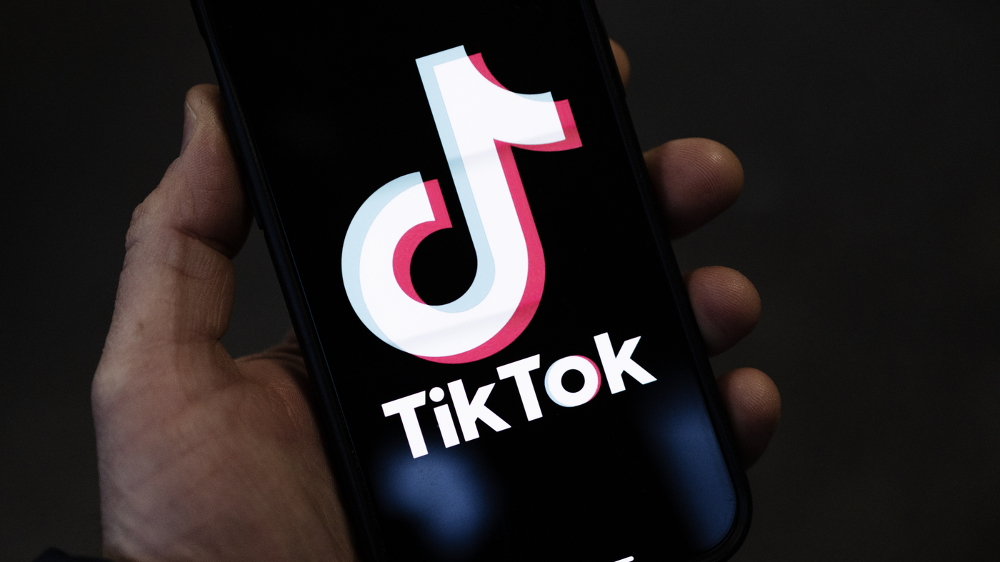
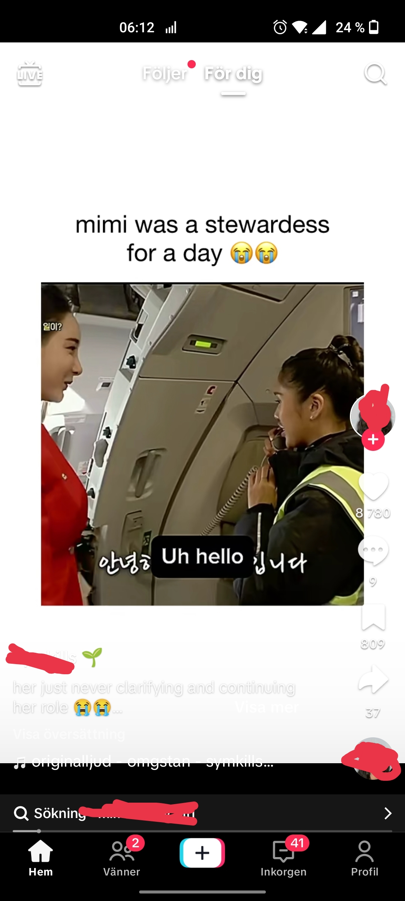

TikTok UX Case Study
Understanding the UX behind one of the world's most engaging platforms
Project Summary
This study explored the user experience (UX) and interface usage of TikTok among young users aged 15-23, grounded in the Technology Acceptance Model (TAM). The goal was to identify design factors that drive usability, engagement, and satisfaction.
Project Overview
TikTok has revolutionized social media with its addictive, content-first design. Our research focused on uncovering the design elements that resonate with young users while identifying areas for improvement to enhance accessibility and user satisfaction.
Objectives
- Examine usability strengths and weaknesses
- Investigate how TikTok's interface impacts user behavior
- Provide actionable recommendations for a more inclusive and user-friendly design
My Role
- UX Design: Evaluating and iterating interface solutions
- Interviews: Conducting user interviews to gather qualitative insights
- Data Analysis: Analyzing patterns and behaviors from user feedback
- Survey Creation: Designing and administering targeted questionnaires
Research Methods
Interviews
- Type: Semi-structured, open conversations with frequent TikTok users
- Participants: Purposefully selected users aged 15-23
- Setting: Conducted in natural user environments for authentic feedback
- Outcome: Identified recurring usability issues and user satisfaction factors
Heuristic Evaluation
- Framework: Based on Nielsen Norman Group's 10 heuristics
- Focus Areas: Visibility, user control, error prevention, and consistency
- Team: Five UX experts contributed diverse perspectives
- Outcome: Surfaced key usability concerns such as clutter and button placement
Thematic Analysis
- Process: Coding and categorizing themes from interview transcripts
- Outcome: Highlighted pain points like visual fatigue and strengths like effective personalization
Data Triangulation
- Purpose: To validate findings across methods
- Implementation: Cross-checked interview insights with heuristic results
- Outcome: Strengthened the reliability of conclusions by ensuring consistency
Pain Points
- Complexity and Clutter: Navigation hindered by a busy interface
- Button Placement: Right-side buttons obscured video content
- Visual Fatigue: Light themes and low-contrast text strained user eyes
Visual Fatigue Example
Example of visual fatigue caused by low contrast and bright themes:
Key Findings
01 Strengths
- User-Friendliness: Clear instructions and one-hand usability
- Personalization: Algorithm-driven, relevant content boosted engagement
- System Feedback: Real-time system feedback improved navigation
02 Areas for Improvement
- Visual Design: Enhance contrast for better readability
- Button Placement: Adjust positions to avoid obstructing content
- Visual Fatigue: Introduce dark mode or muted themes
Key Insights
- Engaging Design: TikTok excels at driving user engagement through its interactive and intuitive layout
- Visual Appeal: Aesthetic elements enhance the experience but need better balance for readability
- Behavioral Triggers: Psychological hooks keep users engaged but require careful ethical consideration
Summary
The research revealed TikTok's strengths in delivering high engagement and personalization through intuitive design. However, there is an opportunity to refine its visual design to reduce user fatigue and improve readability. These insights emphasize the importance of a user-centered, iterative design process to cater to evolving user needs.
Conclusion
This case study demonstrates the power of UX research to uncover actionable insights that can drive meaningful improvements in widely used products like TikTok. While also pinpointing and highlighting the importance of a user-centered, iterative design process to cater to the evolving user needs. One such implementation could be to implement a dark mode or muted themes to reduce visual fatigue and improve readability.